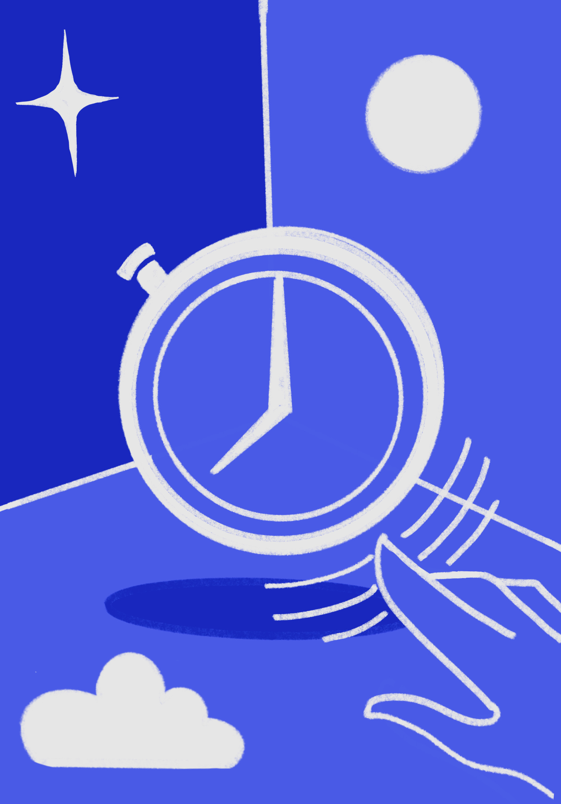
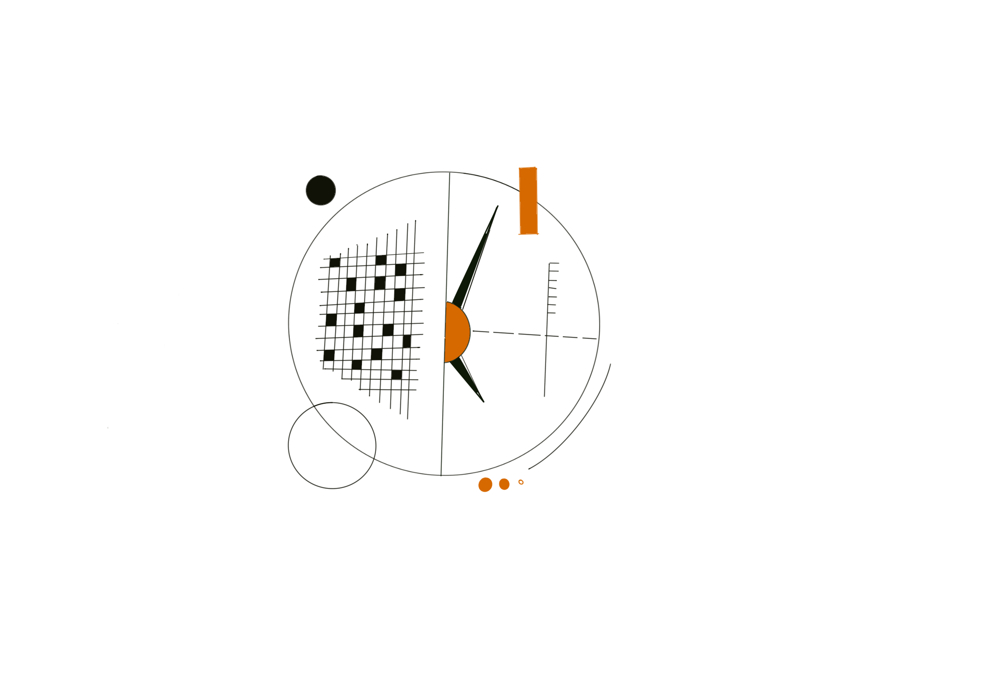
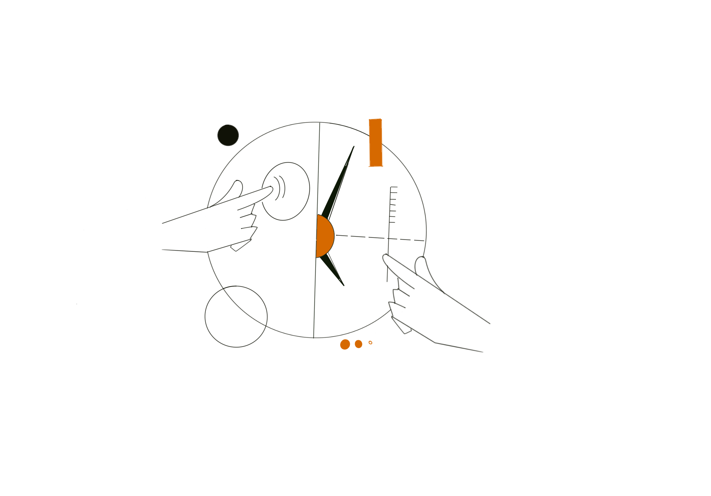
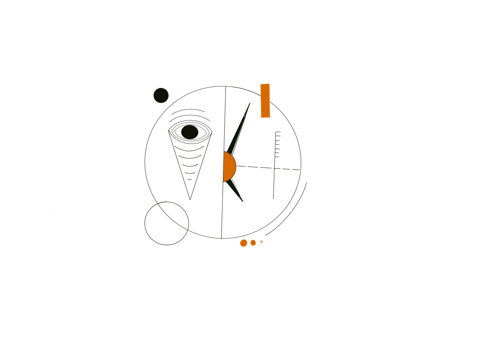

Rethinking Time: Futurescoping for Timekeeping Devices

Titan Company engaged me to explore the future of the timekeeping device — not as an incremental brief, but an open one. What assumptions about watches and clocks could be challenged? What might a timekeeping artefact become if it wasn't constrained by what it had always been? Over the course of this engagement, we developed 20+ concepts and prototypes across six domain areas. Four were physically built. All are now with Titan.
Where It Started
The engagement grew out of my NID thesis work on Kairos — a sun-arc timekeeping artefact that explored ambient, non-numerical approaches to time. Titan saw that direction and wanted to pursue it further, at scale. The thesis became the starting point for a much wider research and prototyping programme.
The brief had two parameters. Whatever we developed had to be manufacturable — using available materials and components, with a real path to production. And it had to create genuine personal connection — not novelty for its own sake, but a relationship between object and person that deepened over time.
Futurescoping — The Research Questions
Before any concepts were generated, we needed to understand what people actually felt about time — not what they said in a survey, but what their language, behaviour, and existing objects revealed. The futurescoping phase mapped the category's assumptions and its open edges.
- What are the different ways cultures represent time, and how did the numerical clock become the default?
- How does time get structured around events, relationships, and emotions — not just hours?
- What do people's existing associations with analog vs. digital tell us about what they want from a timekeeping device?
- Where are the edges of the market — and what's beyond the luxury watch category?
- What would it mean for a timekeeping artefact to be multisensory, ambient, or environmental?
Six Domain Areas — Where the Research Pointed
01
Productivity & Health
Calm technology; focus and goal-setting; health monitoring as a relationship with your own time rather than a set of metrics.
02
IoT & Connected Environments
Time as a property of spaces — smart home integration, ambient monitoring, the alarm as a relic.
03
Tangible Interaction
Multisensory time: touch, weight, sound, temperature as modalities. The body as a site for timekeeping rather than the wrist alone.
04
Luxury & Heirloom
One of the fastest-growing segments — driven by nostalgia, personal association, and objects that carry history. Patina as a feature.
05
Material Innovation
Sustainable and unconventional materials that age, change, and develop a relationship with their owner over time.
06
Wearables
Health and well-being as the primary function; time-display as secondary. The watch receding behind the sensor.
From Research to Prototypes
Each domain area generated a set of concept directions. 20+ were developed in total — sketches through to detailed design specifications. From these, four were taken to physical prototype: proof-of-concept models built to test the experience, not just the idea. The prototypes ranged from working electronic artefacts to material explorations and interaction models.
The selection criteria at each stage were twofold: feasibility within a 1–2 year production horizon, and strength of personal connection in user testing. Concepts that scored well on novelty but generated no emotional response were set aside.



A Note on Scope
The full body of concepts and prototypes developed during this engagement is proprietary to Titan Company Ltd. What's shown here represents the research framing and process. The physical prototypes and full concept documentation can be discussed in person.
Kairos — the NID thesis artefact that preceded and seeded this engagement — is documented separately. See Kairos →